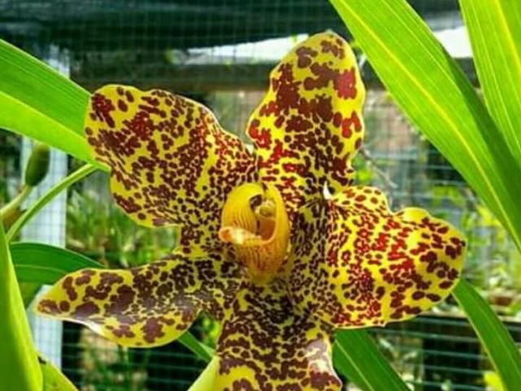
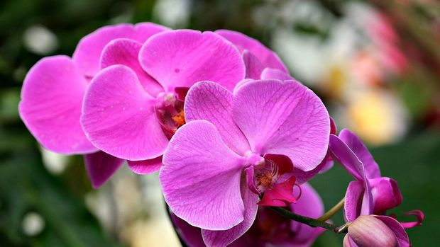

WELCOME ORCHID LOVER KRSP
Bunga Anggrek merupakan tanaman hias yang cantik dan memilki kekhasan. Oleh karena itu, banyak orang yang menyukai bunga ini.
 |
ORCHID LOVER KRSP |
|---|
ABOUT
ANGGREK
Bunga anggrek cocok untuk menunjukkan cinta dan persahabatan, serta tidak masalah diberikan untuk berbagai momen. Karakter anggrek yang tahan lama melambangkan rasa sayang atau hubungan yang awet.
JENIS BUNGA ANGGREK

Anggrek dendrobium warna bunga yang cerah dan cantik, sehingga sangat cocok dijadikan sebagai tanaman hias.

Anggrek Tebu berwarna kuning dan berbintik kecoklatan, merah kehitam-hitaman. Bunga ini tahan layu meskipun sudah dipotong batangnya, bahkan bisa tahan sampai 2 bulan.

Bunga anggrek bulan juga digemari banyak orang dan sering kita temui.
Penampilannya sangat cantik dan dapat tumbuh menempel pada batang atau pohon.
Anggrek hitam termasuk anggrek yang cukup langka.
Warnanya yang hitam menjadikannya berbeda dengan anggrek lain yang tampak cerah dan cantik.